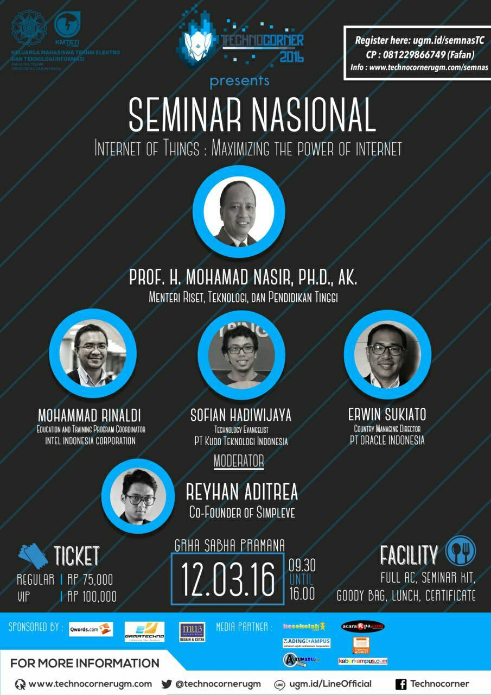

Hadir dengan tema "Internet of Things", Seminar ini bertujuan untuk membangkitkan antusiasme publik, serta membangun pemikiran yang berkualitas terhadap penggunaan internet yang berkembang dengan pesat. Penerapan konsep internet of Things pada akhir-akhir ini semakin marak di indonesia. Munculnya konsep Internet of Things ini dapat dimanfaatkan untuk kepentingan pembangunan nasional. Seperti kemampuan berbagi data, pengembangan fasilitas publik, serta pembangunan kota berkonsep smart city di Indonesia. Selain itu, Seminar ini diharapkan mampu memotivasi peserta untuk mengembangkan ide dan penerapan teknologi dengan berbasis Internet of Things demi kemajuan Bangsa Indonesia.
Tema Acara
Internet of Things: Maximizing the Power of Internet
Waktu dan Tempat
Penyelenggara
Keluarga Mahasiswa Teknik Elektro dan Teknologi Informasi, Fakultas Teknik, Universitas Gadjah Mada.
Tiket
| Kategori | Harga |
|---|---|
VIP |
Rp 100.000,00 |
| Reguler | Rp 75.000,00 |
Pendaftaran
- Isi form pendaftaran di ugm.id/semnasTC
- lakukan pembayaran dengan cara transfer ke rekening BANK MANDIRI, no Rek. 137-00-1192262-8 a/n FIHA FEBIALA, sesuai dengan harga tipe tiket yang anda pesan (VIP/Reguler)
- Buka email yang kami kirim untuk mengkonfirmasi pembayaran, jangan lupa untuk mengupload bukti transfer
- Tunggu selambat-lambatnya 2x24 jam setelah konfirmasi pembayaran, kami akan mengirim e-tiket berupa QR code ke email anda yang akan digunakan untuk konfirmasi kehadiran pada hari-H
Frequently Asked Question
Q : Apa bedanya antara reguler dan VIP?
A : Keunggulan VIP beberapa diantaranya :
- Mendapat tempat duduk depan
- Kursi lebih nyaman
- Konsumsi lebih baik
- Seminar kit lebih lengkap
- Mendapat merchandise khas Technocorner 2016
Q : Bagaimana alur/proses pendaftaran?
A : Langkah pendaftaran adalah sebagai berikut
- Buka ugm.id/semnasTC
- Isi form pendaftaran sesuai dengan identitas peserta.
- Pilih tipe VIP/Reguler.
- Lakukan pembayaran dengan cara transfer ke rekening bank MANDIRI, no Rek. 137-00-1192262-8 a/n FIHA FEBIALA, sesuai dengan harga tipe tiket yang anda pesan (VIP/Reguler).
- Cek email anda, akan kami kirim e-tiket berupa QR code yang akan digunakan untuk konfirmasi kehadiran pada hari-H.
Q : Nama rekening yang saya pakai untuk pembayaran berbeda dengan identitas tiket, bagaimana proses konfirmasinya?
A : Kirim konfirmasi pembayaran dengan format: TC16_NAMA REKENING_NAMA IDENTITAS TIKET_JUMLAH PEMBAYARAN". dikirim ke line official technocorner ( ugm.id/LineOfficial ) atau sms ke nomor 081229866749. Akan lebih baik bila bukti transfer juga dikirim dalam bentuk foto agar mempermudah konfirmasi.
Contoh: TC16_BUDI SETIAWAN_GANANG SAPUTRO_100000
Q : Bila saya membeli beberapa tiket dan membayar melalui satu rekening, bagaimana saya mendapat konfirmasi untuk seluruh tiket yang saya beli?
A : kirim konfirmasi pembayaran dengan format: TC16_NAMA REKENING_JUMLAH TIKET YANG DIBELI_NAMA TIKET 1_NAMA TIKET 2__NAMA TIKET SELANJUTNYA_TOTAL PEMBAYARAN". dikirim ke line official technocorner ( ugm.id/LineOfficial ) atau sms ke nomor 081229866749. Akan lebih baik bila bukti transfer juga dikirim dalam bentuk foto agar mempermudah konfirmasi.
Contoh: TC16_BUDI SETIAWAN_2_BUDI SETIAWAN_GANANG SAPUTRO_175000
Q : Saya sudah transfer dengan benar, kapan saya mendapat e-ticket di email saya?
A : Harap menunggu dalam waktu 2x24 jam, bila sampai waktu tersebut belum mendapat konfirmasi, silakan kirim konfirmasi pembayaran dengan format: TC16_NAMA REKENING_NAMA IDENTITAS TIKET_JUMLAH PEMBAYARAN. dikirim ke line official technocorner ( ugm.id/LineOfficial ) atau sms ke nomor 081229866749. Akan lebih baik bila bukti transfer juga dikirim dalam bentuk foto agar lebih mempermudah konfirmasi.
Contoh: TC16_BUDI SETIAWAN_GANANG SAPUTRO_100000
Q : Saya tidak bisa transfer, apakah saya bisa membayar secara langsung?
A : Bisa, setelah mengisi form, silakan datang ke Gedung Departemen Teknik Elektro & Teknologi Informasi FT UGM Jl. Grafika No. 2 Kampus UGM, Yogyakarta pada hari senin-jumat jam 08.00-16.00 dengan membawa kartu identitas sebelum datang, harap mengabari panitia terlebih dahulu melalui Line official technocorner ugm.id/LineOfficial ) atau sms ke nomor 081229866749.
Q : Apa fungsi dari e-ticket?
A : e-ticket berfungsi untuk konfirmasi kehadiran pada hari-H, dengan cara menunjukkan e-ticket melalui layar smartphone anda.
Q : Apakah tiket harus ditunjukan melalui smartphone?
A : Bagi yang tidak bisa membawa smartphone/tablet pada hari-H, dapat mencetak email yang berisi e-ticket dan dibawa pada hari-H.
Q : Apakah saya perlu mencetak e-ticket?
A : tidak perlu, namun bila anda tidak bisa membawa smartphone pada saat hari-H, anda dapat mencetak e-ticket agar mempermudah panitia untuk mengkonfirmasi.